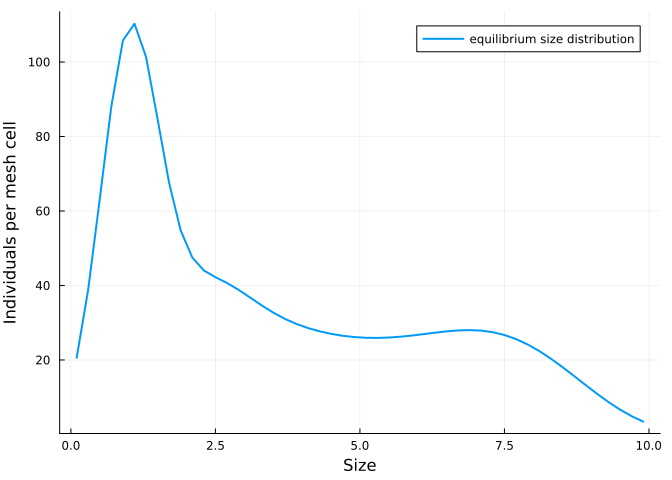
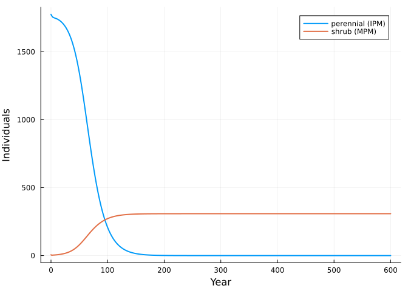
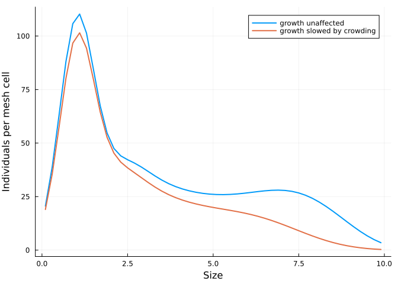

Composing an integral projection model with a matrix model
Simon Frost
- Beyond matrices
- A stage with a continuous trait
- Adding a stage-structured competitor
- Predicting the outcome without simulating
- When a pool changes the shape of a kernel
- A stage without a trait
- The mesh does not matter
- Reference
ENV["GKSwstype"] = "100"
using MatrixCommunityModels
using IntegralProjectionModels: PKernel, FKernel, LinearSurvival, NormalGrowth, FecundityRate
using PlotsBeyond matrices
Lytle & Tonkin (2023) note that a matrix structure “is not strictly required” for a community model: any population model with density dependence could be linked through the same dependency assumption. An integral projection model (IPM) describes a population structured by a continuous trait such as size. Cut into mesh cells, the trait is a set of stages like any other, so an IPM can be a box in the same wiring diagram as a stage-structured species. It needs its kernels, and a statement of how much of each pool an individual of each size occupies.
A stage with a continuous trait
A ContinuousStage is a stage whose individuals differ in a trait: here size, between 0 and 10, cut into 50 cells.
plant = ContinuousStage(:plant, ContinuousDomain(0.0, 10.0, 50))
z = meshpoints(plant) # sizes at the middle of the cells
stage_names(plant)[1:3], z[1:3], step_size(plant)([:plant1, :plant2, :plant3], [0.1, 0.30000000000000004, 0.5], 0.2)The life cycle is written as before, as named transitions. Each transition is now a kernel: a function giving the density of individuals of size y next year per individual of size x this year. Survival increases with size, growth is normally distributed around a linear function of size, and seed production increases exponentially with size.
normal(y, mean, sd) = exp(-0.5 * ((y - mean) / sd)^2) / (sd * sqrt(2π))
survival(x) = 1 / (1 + exp(0.5 - 0.4x))
growth(y, x) = normal(y, 1.2 + 0.85x, 0.7)
seedlings(x) = 0.2 * exp(-1.0 + 0.5x) # established seedlings per plant
seedling_size(y) = normal(y, 1.0, 0.5)
life = kernel_net(plant,
:growing => (y, x) -> survival(x) * growth(y, x),
:seeding => (y, x) -> seedlings(x) * seedling_size(y))ResponsiveProjectionNet(50 stages, 2 transitions, 0 responses)kernel_net evaluates the kernels on the mesh and returns an ordinary projection net with one stage per cell. Its state is the number of individuals in each cell.
The kernels can also be those of IntegralProjectionModels.jl: a PKernel of survival and growth and an FKernel of fecundity on the stage’s mesh, which kernel_net discretises with that package’s own materialize. The same vital rates built from its rate types give the same net:
P = PKernel(LinearSurvival(-0.5, 0.4), NormalGrowth(1.2, 0.85, 0.7), plant.domain)
F = FKernel(FecundityRate(-1.0, 0.5, 1.0, 0.5, 0.2), plant.domain)
ready_made = kernel_net(plant, :growing => P, :seeding => F)
maximum(abs, to_matrix(ready_made) - to_matrix(life))1.1102230246251565e-16Kernels built elsewhere that arrive as matrices enter through matrix_net instead.
Recruitment is limited by space, a response on the seeding transition, and an individual of size x occupies 0.02 x² units of space. trait_weights writes a pool contribution as a function of the trait.
K = 1000.0
crowding(ctx) = max(0.0, 1 - ctx.pool.space / K)
space_used(x) = 0.02x^2
perennial = species(:perennial, births(respond(life, :seeding => crowding), :seeding);
occupies = [:space => trait_weights(plant, space_used)])OpenCommunity(perennial; pools = space)On its own the perennial grows to an equilibrium that fills about two thirds of the space:
n0 = zeros(50)
n0[z .< 2] .= 2.0
eq = equilibrium(perennial, n0, nothing)
(converged = eq.converged, individuals = sum(eq.n), space = pool_totals(perennial, eq.n, nothing).space)(converged = true, individuals = 1774.6585917775656, space = 676.7432286069879)plot(z, eq.n; xlabel = "Size", ylabel = "Individuals per mesh cell", label = "equilibrium size distribution", lw = 2)
Adding a stage-structured competitor
The shrub is the three-stage matrix model of the introduction. The two species are composed exactly as two matrix models would be. Because the perennial has a continuous stage, project solves the community with IntegralProjectionModels.jl, the shrub being a population of three discrete classes.
shrub_life = ValuedProjectionNet([:seedling, :juvenile, :adult],
:establishing => [(:seedling => :juvenile) => 0.30], :maturing => [(:juvenile => :adult) => 0.50],
:persisting => [(:adult => :adult) => 0.95], :seeding => [(:adult => :seedling) => 3.0])
shrub = species(:shrub, births(respond(shrub_life, :seeding => crowding), :seeding);
occupies = [:space => [0.1, 1.0, 4.0]])
com = community(perennial, shrub)
sol = project(com, [eq.n; 5.0; 0.0; 1.0], fill(nothing, 600))
plot(sol.t, [abundance(sol, :perennial) abundance(sol, :shrub)];
label = ["perennial (IPM)" "shrub (MPM)"], xlabel = "Year", ylabel = "Individuals", lw = 2)
The shrub invades the established perennial and slowly replaces it.
Predicting the outcome without simulating
Each species alone settles at the level of crowding at which it just replaces itself. The other species can invade if its growth rate at that level of crowding exceeds one.
seq = equilibrium(shrub, [5.0, 0.0, 1.0], nothing)
(shrub_into_perennial = invasion_growth_rate(shrub, perennial, eq.n, nothing),
perennial_into_shrub = invasion_growth_rate(perennial, shrub, seq.n, nothing))(shrub_into_perennial = 1.0757099780692048, perennial_into_shrub = 0.9473116713958112)The shrub can invade the perennial’s equilibrium but the perennial cannot invade the shrub’s, which is the replacement seen in the projection.
When a pool changes the shape of a kernel
So far the pool only scales a kernel: crowding multiplies every entry of seeding by the same number. Often a pool changes a vital rate inside the kernel instead. Suppose plants grow more slowly as space fills, the yearly increment halving when it is full. The growth kernel then has a different shape at each level of crowding, and is marked responsive: a function of the context that returns the kernel for that year.
function shaded(cells)
plant = ContinuousStage(:plant, 0.0, 10.0, cells)
life = kernel_net(plant,
:growing => responsive(ctx -> begin
full = min(1.0, ctx.pool.space / K)
(y, x) -> survival(x) * normal(y, 1.2 * (1 - 0.5 * full) + 0.85x, 0.7)
end),
:seeding => (y, x) -> seedlings(x) * seedling_size(y))
sp = species(:perennial, births(respond(life, :seeding => crowding), :seeding);
occupies = [:space => trait_weights(plant, space_used)])
return sp, meshpoints(plant)
end
slow, _ = shaded(50)
eq_slow = equilibrium(slow, n0, nothing)
(individuals = sum(eq_slow.n), space = pool_totals(slow, eq_slow.n, nothing).space,
shrub_invasion_rate = invasion_growth_rate(shrub, slow, eq_slow.n, nothing))(individuals = 1359.4601953753481, space = 323.03428885487995, shrub_invasion_rate = 1.1718409976315898)plot(z, [eq.n eq_slow.n]; xlabel = "Size", ylabel = "Individuals per mesh cell",
label = ["growth unaffected" "growth slowed by crowding"], lw = 2)
Plants now stay small, the population fills only a third of the space, and the shrub invades faster.
A stage without a trait
A species can mix the two kinds of stage. Give the perennial a seed bank: a plant sheds seeds into it, a seed germinates with probability 0.2 a year and otherwise stays dormant with probability 0.5. The seed bank is an ordinary stage, and the kernels to and from it are functions of one size instead of two.
banked = kernel_net([:seed, plant],
:dormancy => [(:seed => :seed) => 0.5],
:germinating => [(:seed => :plant) => y -> 0.2 * seedling_size(y)],
:growing => [(:plant => :plant) => (y, x) -> survival(x) * growth(y, x)],
:seeding => [(:plant => :seed) => x -> exp(-1.0 + 0.5x)])
with_bank = species(:perennial, births(respond(banked, :germinating => crowding), :seeding);
occupies = [:space => trait_weights(plant, space_used)])
eq_bank = equilibrium(with_bank, [0.0; n0], nothing)
(stages = length(eq_bank.n), seeds = eq_bank.n[1], plants = sum(eq_bank.n[2:end]),
space = pool_totals(with_bank, eq_bank.n, nothing).space)(stages = 51, seeds = 23360.778817930266, plants = 2198.505024356993, space = 838.3716143105611)The mesh does not matter
A pool total is an integral over the size distribution, so a finer mesh changes the number of states but not the model. This holds for the kernel that changes shape too.
for cells in (50, 100, 200)
sp, zz = shaded(cells)
start = zeros(cells)
start[zz .< 2] .= 20 / count(zz .< 2)
e = equilibrium(sp, start, nothing)
println("cells ", cells, ": individuals ", round(sum(e.n); digits = 1), ", space ",
round(pool_totals(sp, e.n, nothing).space; digits = 1),
", shrub invasion rate ", round(invasion_growth_rate(shrub, sp, e.n, nothing); digits = 4))
endcells 50: individuals 1359.5, space 323.0, shrub invasion rate 1.1718
cells 100: individuals 1358.5, space 322.9, shrub invasion rate 1.1719
cells 200: individuals 1358.2, space 322.9, shrub invasion rate 1.1719The thistle vignette uses the same tools on a published IPM, in a community with two matrix models.
Reference
Lytle, D. A. & Tonkin, J. D. (2023). Matrix community models for ecology and evolution. npj Biodiversity 2, 26.